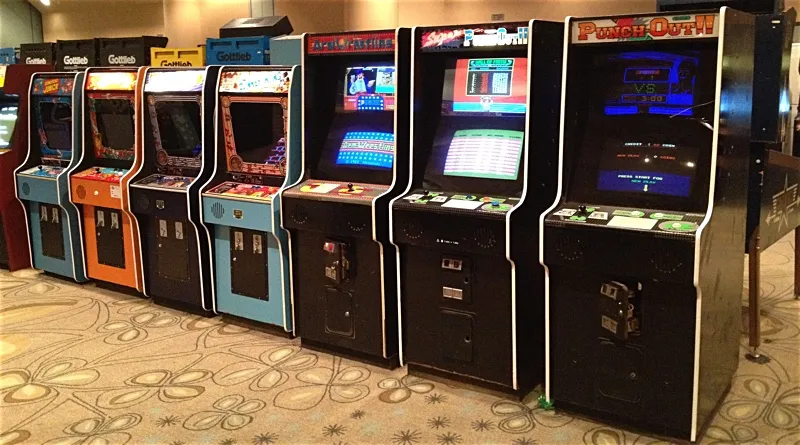
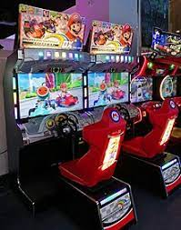
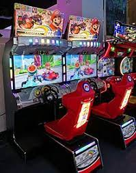

Nintendo hat in 1973 ihren ersten Schritt in den Arcade Markt gesetzt und somit auch ihren ersten Schritt in den Videospielmarkt gesamt. Ihr erstes Produkt war das “Nintendo laserclay shooting System” in Japan. Man konnte für 100 Yen auf eine Leinwand schiessen, mit Ziele, die mit einem Hellraumprojektor eingeblendet wurden. Während der Ölkrise in 1973 haben sie keine andere Arcades gemacht. In 1974 erschien die Arcade wieder mit dem Namen “Wild Gunman”. In den nächsten Jahren kamen mehrere Schiess spiele raus, die auch international aufmerksamkeit bekommen haben. Darin sind zum Beispiel “shooting trainer”, “skyhawk battleshark” und eine frühe Version von “Duckhunt”. In 1975 hat Nintendo “Evrrace” rausgebracht, welches ein Pferderennsimulator war und mit bis zu sechs Spieler haben konnte. In den späten 70er Jahren haben sie auch das Spiel “Sherif”, dass von Shigeru Miyamoto gemacht wurde. Darin ging es darum als Cowboy eine Frau zu retten. Der Sherif hat auch einen Auftritt in Super Smash Brothers Ultimate als eine Assist-Trophäe. Nintendo hat aber auch mehrere Abklatsch Spiele rausgebracht wie “Blockfever” und “Monkey magic” die Klone von “Breakout” waren, “spacefever” und “SF-Hisplitter”, die Klone von “Space Invaders” waren und dann gab es auch “Head-on-N", welches ein “Pac-Man” Klon war. In den frühen 80er Jahren hat Shigeru Miyamoto den Auftrag bekommen, ein Space shooter spiel zu anpassen, um es in den USA rauszubringen, aber anstatt das Spiel zu erstellen, hat er etwas erstellt, was so gut wie jeder kennt. Das Arcade Spiel “Donkey Kong”. Wäre es nicht für “Donkey Kong” gewesen, dann wäre Nintendo vielleicht nicht einmal bekannt geworden. Danach haben sie den Nachfolger “Donkey Kong Jr.” gemacht und danach ging es nur Berg auf für Nintendo. Sie haben das erste “Mario Brothers” rausgebracht welches im Multiplayer spielbar war und das Spiel “Punch Out”. In 1984, startete Nintendo mit ihrer “versus” Arcade-reihe. Es waren Ports von NES-Spiele, die auf der Arcade kompatibel gemacht wurden und einen zwei Spieler Erlebnis hatten. Diese Arcade Spiele wurden von 1984 bis 1990 gemacht mit bekannten Spielen wie “Duckhunt”, “Dr. Mario” und “Super Mario Brothers”. In 1992 hat Nintendo angekündigt, dass sie mit Hausgemachten Arcade-spiele aufhören. Ab 2004 wurden viele Japan exklusive Mario Party, Pokémon und Mario Kart Arcade spiele rausgebracht (TetraBitGaming, 2020).


Alte Arcades
https://www.nintendotimes.com/1985/11/24/cant-get-a-nes-check-out-your-local-arcade/
Moderne Arcades
https://en.wikipedia.org/wiki/Mario_Kart_Arcade_GP